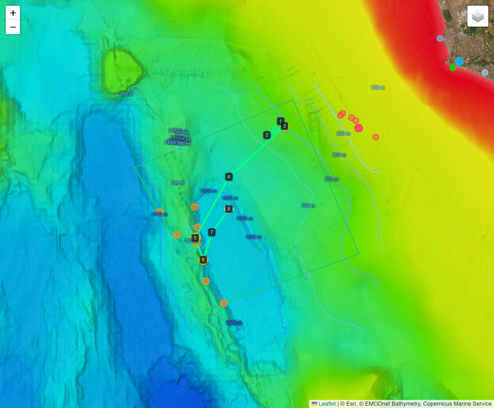
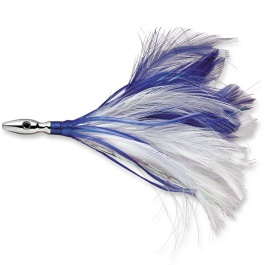
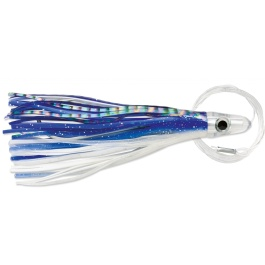
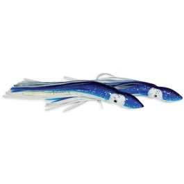
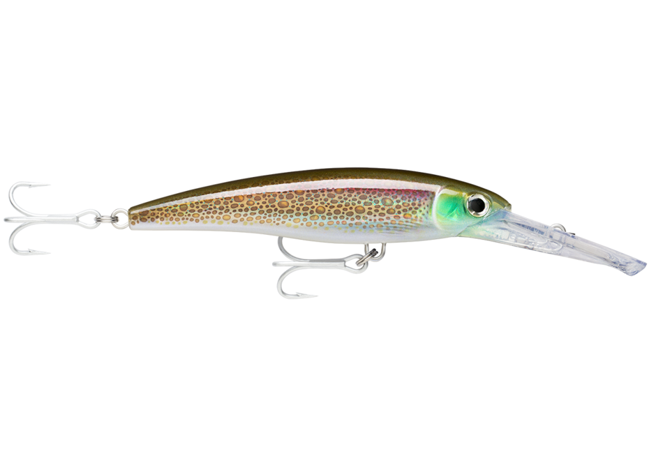
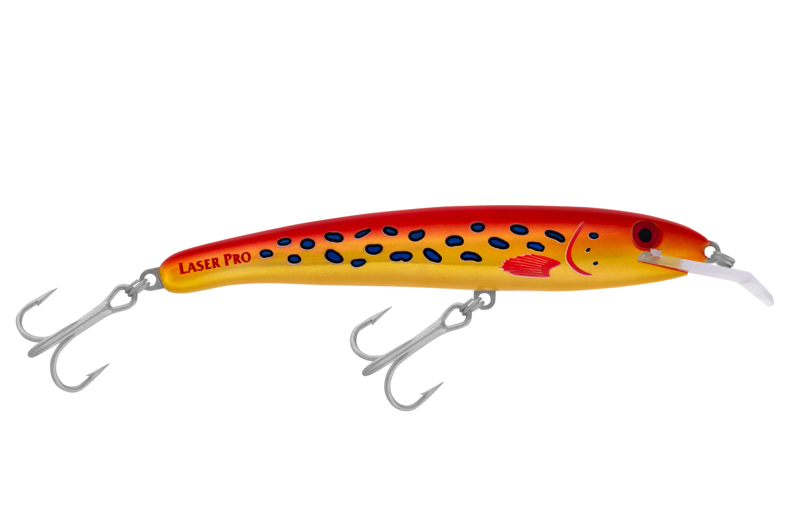
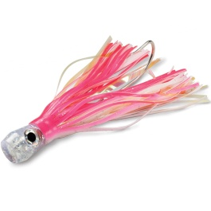
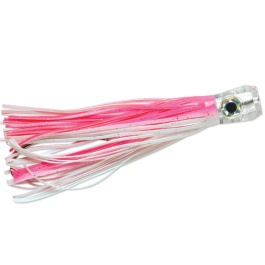
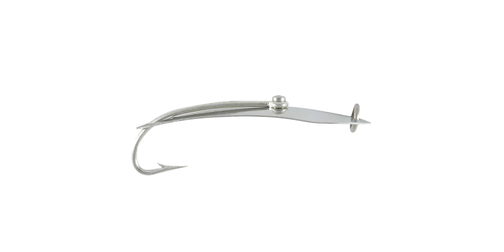
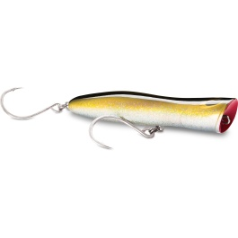

NE produttivo nel solunare → scarpata SW nel pomeriggio. La rotta che gioca entrambe le partite della giornata e massimizza la probabilità di fare punti.
0
Il verdetto in tre righe
A è l'unica rotta che ti tiene in pesca dentro il campo già alle 08:41, cattura tutta la finestra d'oro solunare sul bordo NE (dove abboccano i primi tonni della giornata, il pesce che vale di più), e poi scende sulla struttura SW per l'alalunga del pomeriggio. Non scommetti su un solo bersaglio: diversifichi, quindi la probabilità di tornare con punti è la più alta delle tre rotte.
Finestra d'oro — solunare in riflussoVEN 26: 09:22–11:22 | SAB 27: 10:09–12:09 — in quel momento devi essere sullo spot, con le esche in acqua, non in trasferimento. La Rotta A è costruita perché tu sia già in pesca sul bordo NE quando si apre.
I
Perché A vince sulle altre due
B punta tutto sul profondo SW (solo alalunga/spada). C resta solo sul bordo NE (solo tonni). A le unisce nell'ordine giusto rispetto al sole e al vento.
1
Doppia partita
Mattino = il FRONTE (color line del Tevere, vento debole). Pomeriggio = la STRUTTURA (la brezza SW spinge il fronte a costa e fa risalire foraggio sulla scarpata). A pesca prima l'uno, poi l'altra: nessun tempo sprecato sull'acqua sbagliata all'ora sbagliata.
2
Finestra d'oro sul pesce giusto
Quando si apre il solunare sei già sull'angolo NE produttivo (CHL più alta, break sul bordo): è lì che abboccano i primi tonni della giornata — 1.200 punti, il bersaglio di massimo valore. Nel solunare i pesci si alimentano di più: il tonno mangia presto, sul fronte. C ci arriva, ma A lo sfrutta e poi cambia zona.
3
Bersagli diversificati
Tonno sul bordo NE, alalunga sul banco 717 m, spada (bonus raro) sul muro 924 m. Tre specie in tre fasce orarie: se i tonni non ci sono, l'alalunga ti salva la giornata. B e C giocano una carta sola.
Base del ragionamentoIl pesce grosso caccia dove coincidono tre segnali: color line (clorofilla), salto termico (SST) e drop-off / struttura del fondale. La Rotta A è tracciata per attraversare questi punti di coincidenza nell'ora in cui sono più attivi (principio confermato dalla letteratura sugli hotspot dei pelagici: fronte CHL + shelfbreak + ore diurne).
II
La rotta sul campo gara
Carta batimetrica reale (EMODnet) con la Rotta A 1→8: parti in alto a NE (tonni, fondale che risale) e scendi a SW sulle strutture profonde (scarpata, blu). È la stessa base delle mappe interattive.

Rotta A sulla carta batimetrica EMODnet: il rosso/arancio a NE è il fondale alto e produttivo (tonni, punti 1–4); il blu a SW è la scarpata profonda con banco 717 m e muro 924 m (alalunga/spada, punti 5–8). Linee sottili = isobate; quadrilatero = campo gara.
Legenda profonditàRosso/giallo = basso (costa NE) · verde = medio · azzurro/blu = profondo (scarpata SW). Il pesce grosso caccia sui gradini tra le fasce di colore (drop-off): lì passano le isobate fitte.
Schema semplificato (vertici e rotta)
Rotta A: 1→8 dentro il campo (08:00 → 15:30). Tonni in alto a NE, alalunga e spada sul profondo SW.
Campo gara in 3DPrima di pescarlo, ruota e zooma il fondale: marinovinc.github.io/CampoGara3D (aprilo con rete, poi resta in cache offline).
III
Passo-passo: coordinate, orari, direzione
08:00 partenza dal raduno. Punto 1 con un unico trasferimento a 18 kn (canne issate); da lì in poi sempre velocità di traina ~6–7 kn, canne sempre a mare — nessun ritiro per spostarsi (richiesta skipper). Gli orari sono i tempi minimi di navigazione: usali come controllo di zona. Se sei in ritardo accorcia le passate; se in anticipo lavora di più la zona.
08:00 · 41.745 N, 12.243 E — Raduno Ostia — START gara (canne issate). → WSW (251°) · 12.2 nm · trasferimento 18 kn → punto 1 alle 08:41.
08:41 · 41.680 N, 11.985 E — Start NE in-campo (acqua produttiva): cala lo spread per tonni. → SW (225°) · 1.3 nm in traina → 41.665/11.965 alle 08:52.
08:52 · 41.665 N, 11.965 E — Bordo NE nel solunare (tonni). → ENE (62°) · 1.3 nm → 41.675/11.990 alle 09:03.
09:03 · 41.675 N, 11.990 E — Angolo NE in-campo, primi tonni della giornata (cuore del solunare): è qui e ora che il tonno mangia per primo. → SW (227°) · 4.9 nm → 41.620/11.910 alle 09:47.
09:47 · 41.620 N, 11.910 E — Scendi SW verso le strutture profonde. → SSW (209°) · 4.5 nm → 41.554/11.861 alle 10:28.
10:28 · 41.554 N, 11.861 E — Banco 717 m: alalunga sull'orlo. → SSE (159°) · 1.5 nm → 41.530/11.873 alle 10:41.
10:41 · 41.530 N, 11.873 E — Drop-off 76% / 924 m: spada profondo (bonus raro), stop&go. → NNE (17°) · 1.9 nm → 41.560/11.885 alle 10:58.
10:58 · 41.560 N, 11.885 E — Muri / orlo banco lato W. → NE (37°) · 1.9 nm → 41.585/11.910 alle 11:15.
11:15 · 41.585 N, 11.910 E — Ultima passata sulle strutture: in pesca fino al cessate (15:30). Ripassa banco e muri finché il tempo lo consente, poi rientro a Ostia (fuori gara).
Margine fino alle 15:30I tempi sopra arrivano in zona a metà mattina: il tempo restante serve a ripassare e sostare sugli spot. Resta sul triangolo banco 717 m ↔ muro 924 m ↔ orlo W, alternando le passate, fino al cessate.
IV
Assetto e rotazione esche
Spread 7 canne, esche in superficie. Quando arrivi sul muro SW aggiungi 1 affondata.
Spread — 7 canneC1/C7 flat piombate (15–25 m) · C2/C6 outrigger corto (~40 m) · C3/C5 outrigger lungo (60–70 m) · C4 shotgun (~90 m). Sul muro SW: 1 canna affondata 2×500 g (~11 m), resto in superficie. Velocità 6–7 kn (6–6,5 per scendere/tonno, 7 per coprire più acqua).
Le esche jolly: poche esche, più specie
Non servono dieci esche diverse. Servono poche esche multi-specie montate in taglie scalate: così con 8 canne copri tutte e 8 le prede del periodo.
J1
Octopus / skirt viola-nero
Il jolly assoluto, colore universale della traina mediterranea. Cambia solo la taglia: grande = tonno rosso; media = alalunga, aguglia imperiale, alletterato, palamita.
J2
Halco Laser Pro 160
Minnow tuffante, esca principe alalunga. Prende anche tonno striato, alletterato, lampuga e tonnetti. Viola/scuro, una in chrome col sole alto.
J3
Piuma / piccolo skirt 10–14 cm
Il jolly del numero: striato, palamita, alletterato, lampuga, alalunga piccola. Verde-giallo / rosa. Sono i pesci che fanno punti a quantità.
Due specialisti per gli estremi della catena: cedar plug / skirt naturale blu-bianco sullo shotgun (il tonno rosso grande e diffidente, che mangia lontano dalla barca) e calamaro / soft squid naturale affondato a stop&go (spada bonus + alalunga profonda sul muro).
Assetto a copertura totale
Canna
Pos. / dist.
Esca (jolly)
Colore
Specie coperte
C4 shotgun
~90 m
Skirt naturale / cedar plug, medio-grande
blu-bianco / naturale
Tonno rosso grande
C3 outr. lungo
60–70 m
Konahead octopus medio (J1)
viola-nero
Tonno, alalunga, aguglia imp.
C5 outr. lungo
60–70 m
Halco Laser Pro 160 (J2)
viola / scuro
Alalunga, striato, alletterato, lampuga
C2 outr. corto
~40 m
Octopus skirt medio (J1)
viola-nero / rosa
Aguglia imp., alalunga, palamita
C6 outr. corto
~40 m
Piuma / piccolo skirt 10–14 cm (J3)
verde-giallo / rosa
Striato, palamita, alletterato, lampuga
C1 flat
15–25 m
Jet head a getto (bubble)
viola-nero → chrome
Tonno, aguglia imp. (dal wash)
C7 flat
15–25 m
Cedar plug / minnow chrome
chrome / flash
Tonno, alalunga, striato
Affond.(poi)
~11 m
Rapala X-Rap Magnum (deep diver) / calamaro affondato
naturale
Spada (bonus), alalunga profonda
Logica dell'assettoTaglie scalate (grande sullo shotgun → piccolo del numero sull'outrigger corto) = copri dal tonno rosso al pesce da numero. Viola-nero che domina nel solunare (sole basso), 1–2 chrome/flash col sole alto. Le esche jolly si ripetono in più posizioni: porti meno scatole e copri più specie.
OnestàQuesto è un assetto proposto, da tarare sulla tua cassetta: l'unica esca citata dal briefing è la Halco LP160 viola. Marche/modelli sono esempi della classica traina d'altura mediterranea, non prescrizioni.
Le esche in figura
Le sei esche dell'assetto, per riconoscerle a colpo d'occhio: 3 jolly (J1–J3) + 2 specialisti + l'affondata. Foto prodotto reali degli artificiali (set Forio/Roma). I modelli sono quelli già scelti dal team — tara taglia/colore sulla tua cassetta.Il badge rosso in alto a sinistra dice su quale canna va l'esca e l'ordine: 1ª = la cali allo start (08:41); poi = la aggiungi dopo.
J2Halco Laser Pro 160Alalunga (principe), tonno striato, alletterato, lampugaviola/scuro · 1 chrome col sole alto
1ª · C6

J3Williamson Flash FeatherTonno striato, palamita, alletterato, lampuga — ottima anche su spadapiuma blu/bianco · movimento sinuoso
1ª · C4 shotgun

Bullet head skirtedTonno rosso grande e diffidente — esca regina dello shotgun (~90 m)viola/nero o viola/argento
1ª · C1/C7 flat

Williamson Pulpito (pusher)Tonno, aguglia imp. — spruzzo e turbolenza in posizione media/flatacqua + gonna · viola-nero / blu
poi · affondata

Rapala X-Rap MagnumAlalunga profonda + giù sul muro — deep diver (modo legale per scendere)naturale · paletta lunga, scende da solo
Cala per prime — 08:41, sole basso (tonni sul bordo NE)
Allo start cali le 5 esche scure/viola col bordo rosso (badge 1ª), in quest'ordine di canna:
C4 shotgun (~90 m) — Bullet head viola/nero: il pezzo grosso mangia lontano dalla barca. Cala questa per prima.
C3 e C5 outrigger lunghi (60–70 m) — Kona slant-head (C3) e Halco LP160 viola (C5).
C2 e C6 outrigger corti (~40 m) — Kona (C2) e Flash Feather (C6).
C1 e C7 flat (15–25 m, nella schiuma) — Pulpito (bolle) e una scura sul wash.
L'affondata (Rapala X-Rap Magnum, badge grigio poi) non va allo start: si aggiunge dopo, sul muro SW (punto 7, ~10:41). Le esche della fila qui sotto sono cambi, non start.
Alternative dalla cassetta (altre esche del set Forio/Roma)

Halco Laser Pro 160 XDDVariante che scende di più — alalunga / tonno sul profondovuole acqua pulita · con mono 30 lb tienilo vicino

Williamson Sailfish CatcherTonni / aguglia — flat nella schiuma dei motorirosa/bianco · re vero appena sganciato

Cube flat-face skirtedTunnidi — profilo per traina veloce, richiamo da lontanotesta cubica · rosa/bianco

Cucchiaino ondulanteStriati, tonnetti, pesci di branco — flash leggeroargento · classico del numero

Williamson Popper ProFlash puro, niente gonna — riflessi a sole altonaturale/chrome · ondulante
Esche per ora e luce
Fascia oraria
Luce
Esca & bersaglio
08:00–10:30
Sole basso
Scure / viola di silhouette — tonni e aguglia imperiale sul bordo NE (superficie).
10:30–14:00
Sole alto
Scendendo SW: alalunga sull'orlo del banco (Halco Laser Pro 160 viola); 1 affondata sul muro.
14:00–15:30
Sole calante
Alalunga / tunnidi: più chrome / flash col calo di luce.
Esche più pescanti per specie
Specie
Esca
Colore / quando
Tonno rosso
Konahead / skirted, cedar plug; naturale a traina lenta
Scuri/viola, blu-bianco · 6–6,5 kn
Alalunga
Halco Laser Pro 160, minnow affondanti, piccoli skirted
Viola/scuro, rosa-bianco · ~6,5 kn
Spada(bonus raro)
Calamaro / naturale a stop&go in profondità
Naturale · alba / cambio luce
Dove sono le altre prede
Aguglia imperiale e tonni striati sono pelagici di superficie del fronte NE: cadono nel primo tratto della Rotta A (punti 1–4), in superficie, nel solunare. Per loro non cambi piano — sono già sulla tua rotta.
Preda
Dove (spot)
Quota
Quando
Aguglia imperiale Tetrapturus belone · ≥130 cm · ×1
Bordo NE / color lineALTA Orlo banco 717 m MEDIA Scarpata SW BASSA
Superficie 0–6 m
Solunare, mattino col fronte stabile. Stesso punteggio dello spada ma molto più catturabile: bersaglio chiave per i punti.
Bordo NE produttivo + sopra il banco, lato blu della color line ALTA
Superficie 0–6 m
Branchi che seguono il foraggio sul fronte: tutto il giorno, meglio sul fronte attivo. Fanno numero.
Lampuga ≥60 cm · ×1
Vicino a legni e relitti galleggianti, ovunque sul percorso
Superficie
Se avvisti un legno/oggetto galleggiante: passaci accanto, spesso ci sono sotto.
Conseguenza praticaIl bordo NE in superficie (punti 1–4) non è solo per i tonni: è la zona di aguglia imperiale + striati + tunnidi minori. Lavoralo bene nel solunare con spread 0–6 m — è il tratto che fa più numero, non solo il pezzo grosso.
V
Come comportarsi durante la gara
Sii sullo spot prima della finestra d'oro. Alle 09:03 (VEN) / nel solunare devi già trainare sul bordo NE, non navigare.
Traina il bordo blu, non l'acqua verde piena. Il pesce grosso caccia sul confine tra il verde del Tevere e il blu del mare (la color line).
Stop&go quando l'ecoscandaglio marca: rallenta / folle per far affondare le esche, poi riprendi. Fallo sul tratto dritto, mai in virata stretta (le esche si intrecciano).
MANGIANZA in radio → CONVERGI. Molla il piano e vai: il pesce che mangia batte qualsiasi mappa.
Usa gli orari come controllo zona. In ritardo: accorcia le passate. In anticipo: lavora di più lo spot.
Pomeriggio sulla struttura. Quando la brezza SW rinforza, il fronte si sposta a costa: resta sul banco/muri SW dove l'upwelling porta su il foraggio.
Canne sempre a mare dopo il primo trasferimento: niente ritiri per spostarsi (richiesta skipper).
Regola d'oroIl piano serve a metterti nell'acqua giusta all'ora giusta. Ma se il pesce mangia altrove, il pesce ha sempre ragione: converge sulla mangianza.
VI
Checklist lampo
08:00 START → trasferimento unico 18 kn WSW al punto 1 (08:41).
Cala lo spread 7 canne sul bordo NE; esche scure/viola.
Finestra d'oro: martella l'angolo NE per i tonni.
Metà mattina: scendi SW su banco 717 m → alalunga (Halco LP160 viola).
Sul muro 924 m: 1 affondata, stop&go → spada (bonus).
Pomeriggio: ripassa il triangolo banco↔muro↔orlo W fino alle 15:30.
Radio accesa: qualsiasi mangianza → converge.
VII
A · B · C a confronto
Perché scegliere A in una riga: copre entrambe le partite e diversifica i bersagli. B e C giocano una carta sola.
Rotta
Zona
Bersagli
Quando sceglierla
Resa
Aconsigliata
NE in-campo → scarpata SW
TonnoAlalungaSpada
Sempre: è la scelta di default, bilanciata
Più alta e costante — se i tonni non escono, l'alalunga salva la giornata
B
Tutta scarpata profonda SW
AlalungaSpada
Se punti deciso al profondo / acqua blu
Cattura più "di mestiere" (alalunga numerosa), ma niente tonni
C
Tutto bordo NE produttivo
Tonno + aguglia
Solo se la giornata è da tonni e la flotta marca lì
Massimo punteggio se vanno i tonni, ma rischio giornata vuota
In sintesiA = massima probabilità di fare punti (bilanciata). C = più rischio ma punti tonno se la giornata gira. B = la pescata più "sicura" in numero (alalunga). Le rese sono qualitative, basate sui segnali (fronte + struttura + ore), non su percentuali.